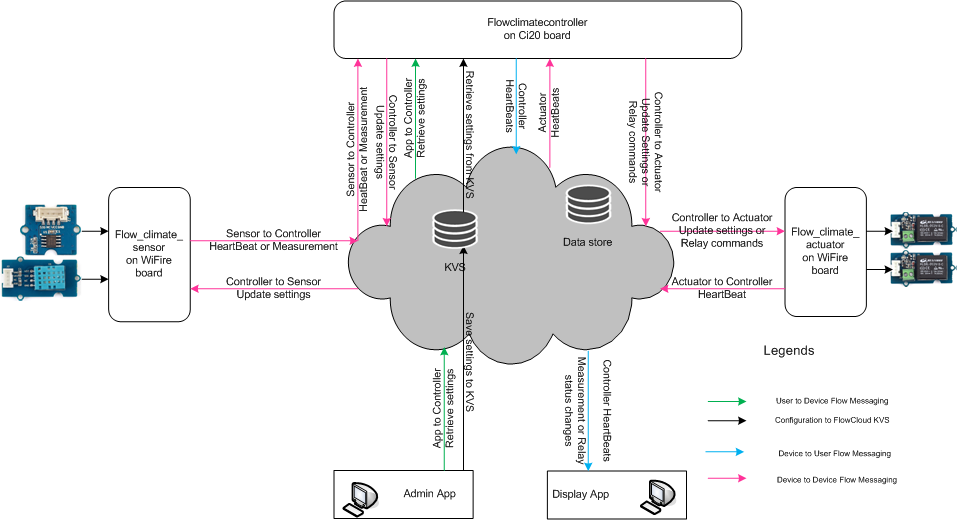

Introduction
The Climate Control Demo demonstrates the capabilities of FlowCloud, a platform developed by Imagination Technologies. This project is an example of how FlowCloud can be used to create useful and practical IoT solutions
Project Summary
What does it do?
- The Sensor board measures temperature and humidity and sends the readings to the Controller.
- The Actuator board has 2 relays attached that will toggle on and off when the Controller sends commands to it. The Temperature relay will be "on" when the measured temperature is below the threshold set by the Admin app (representing a heater), and the Humidity relay will be "off" when the humidity is below the threshold set by the Admin app (representing a fan).
- The Controller takes the values given by the Sensor and when those values exceed thresholds it toggles the Actuator relays. The threshold is set by the Admin app. It also provides the data to the Display app.
- The Admin app is for setting the thresholds for the actuator control, and also for forcing the actuators into specific states.
- The Display app is for showing the current temperature and humidity values, as well as graphing the most recent data.
- The temperature and humidity readings (Wi-Fire Sensor) are sent to the Controller (Ci20 or Linux) and the Controller then toggles relays (Wi-Fire Actuator) based on the readings. When it take these actions, relevant information gets updated on the Display app (Linux).
How does it work?
FlowCloud SDK
- FlowCloud SDK has two major components. FlowCore and FlowMessaging.
- FlowCore supports core functionality such as allowing users to log in as user, log in as device, store settings on the Key Value Store (KVS), upload data on the owned device datastore and log events.
- FlowMessaging enables users to send messages from user to user, user to device or device to user. It also allows the use of a Publish, Subscribe, Notify mechanism.
FlowCore
Key Value Store
The Admin app saves the user's configuration to a Key Value Store (KVS) which is read by the Controller app, allowing settings to be shared and retained through power cycles.
Device Data Store
The Controller uploads measurement data to the device data store on FlowCloud, enabling users to view latest & recent measurement data.
FlowMessaging
- The Wi-Fire Sensor board gets temperature and humidity readings from its Grove sensors via an Arduino shield. It then sends these readings out via FlowMessage to the Controller running on Ci20. It shows the device to device Flow Messaging.
- If these readings meet threshold criteria the Controller sends a FlowMessage to the Actuator board. Again an example of device to device Flow Messaging.
- The Admin app can send messages to the Controller to turn the actuators on and off. It shows user to device Flow Messaging.
- The Controller sends heartbeat messages for actuators, sensors, and the controller to the Display app so that it can show the device status whether they are online or offline. It shows the device to user Flow Messaging.
- Note that the key part of this system that all communication is done via Flowcloud, so all the components can be separated across different networks, over any distance, as long as they have an internet connection.
